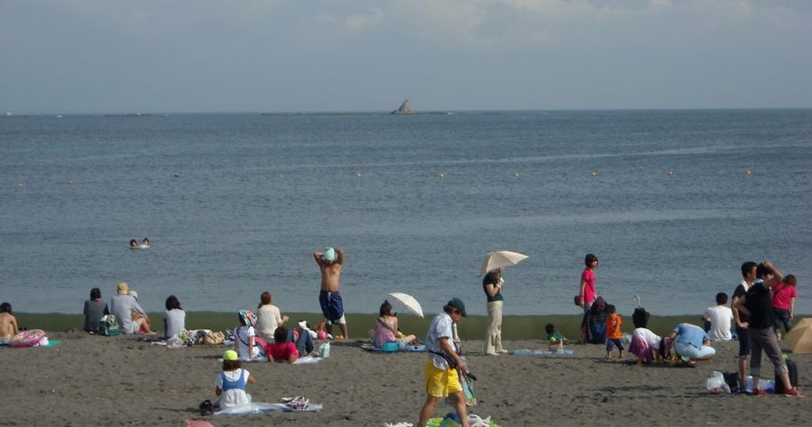
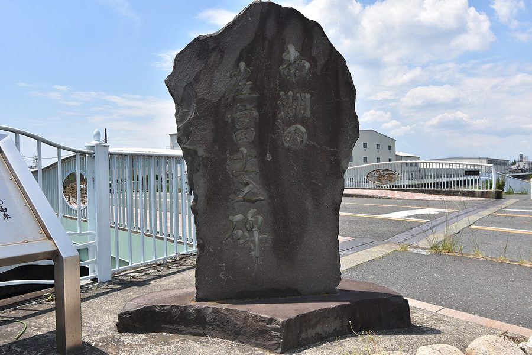
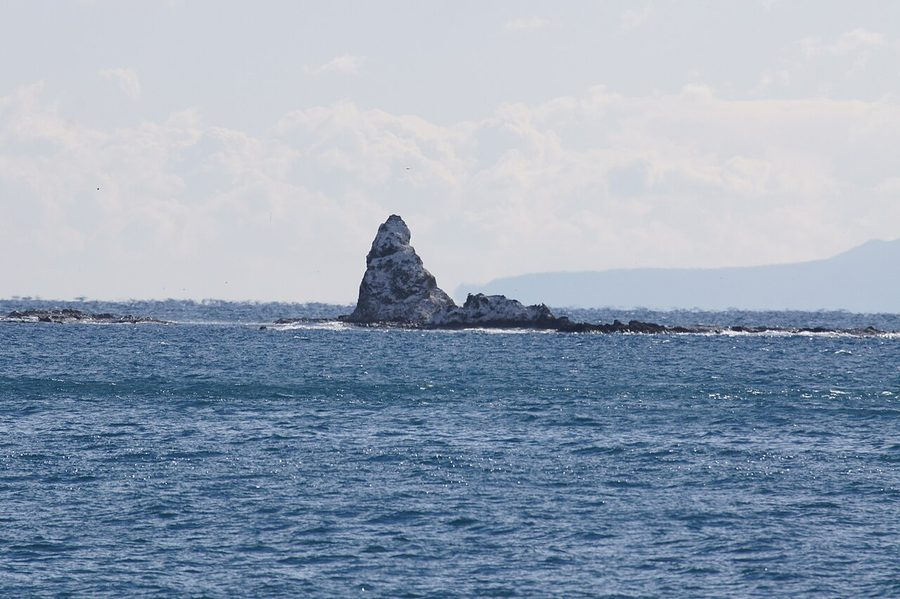
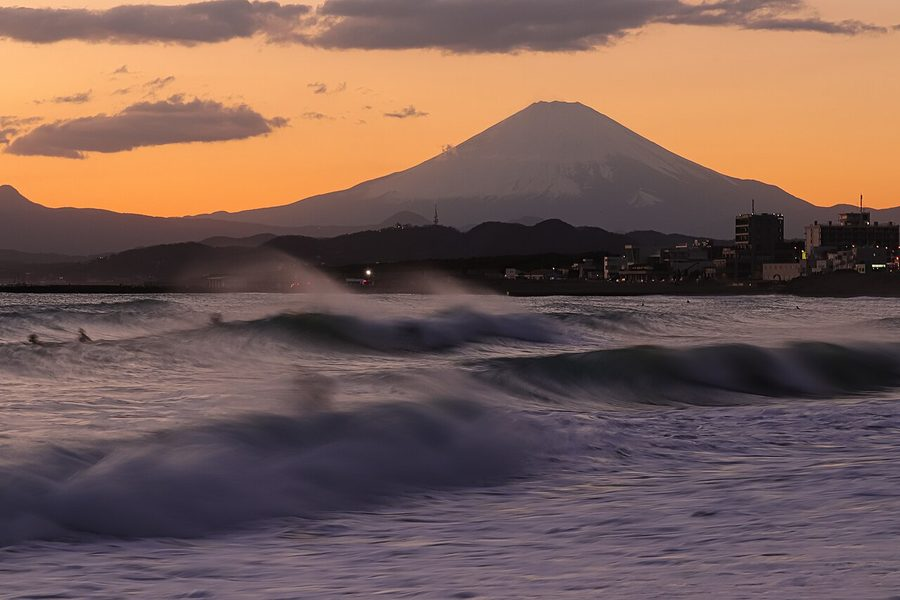

神奈川県茅ヶ崎市の日帰り温泉・銭湯・サウナ（3件）
寄り道スポット検索アプリ「ヨッテコ」の収録データから、神奈川県茅ヶ崎市の日帰り温泉・銭湯・サウナを営業時間・料金つきで一覧にしました（2026年8月時点）。
最も安いのは野天湯元・湯快爽快 ちがさき（880円）。最も遅くまで入れるのは湘南RESORT SPA 竜泉寺の湯 湘南茅ヶ崎店（翌2:00まで）。朝風呂なら湘南RESORT SPA 竜泉寺の湯 湘南茅ヶ崎店（6:00開店）。
神奈川県茅ヶ崎市はどんなまち？
数字で見る🔍神奈川県茅ヶ崎市
まちの横顔




- 地形: 相模原台地の丘陵地帯と、相模川の河口に形成された砂州地帯からなる市です。市域は海岸線から北部に広がっており、地形は湘南砂丘となだらかな丘陵から成っています。市内には小出川と千ノ川が南西に流れ、相模川に注いでいます。
- 観光: 観光都市の側面も持ち、湘南海岸の一翼を担っています。夏には海水浴場としてサザンビーチちがさきがオープンし、多くの海水浴客が訪れます。サーフィンやマリンスポーツを楽しむ人も一年を通して多く、海岸線のサイクリングロードでは烏帽子岩や江の島、富士山、伊豆半島を眺めることができます。海の日には関東三大奇祭の一つ、浜降祭が行われます。市内には温泉施設も2か所あります。
- 歴史と文化: 江戸時代は東海道五十三次の藤沢宿と平塚宿の間の農村地帯でした。東海道中に2か所しかない左富士（道中でいつも右に見える富士山が左手に見える場所）の一つとして知られ、浮世絵の題材にもなりました。現在も国道1号の鳥井戸橋で「南湖の左富士」のレリーフを見ることができます。
寄り道充実度（全国偏差値）
偏差値・順位は、ヨッテコ収録データ（2026年8月時点・26,033件）を市区町村別に集計した施設数の全国分布（1,728市区町村）から毎回算出しています。カードを押すとカテゴリ別の分析に切り替わります。
日帰り温泉から見た神奈川県茅ヶ崎市
日帰り温泉は市内に3件（全国710位タイ、1市区町村あたりの平均は6.7件）。——多くはない。それでも、寄れる湯はある。
- 67%の店に露天風呂があります。全国水準は46%です。相模原台地の丘陵地帯と相模川河口の砂州地帯からなる市。67%という数字が、外で湯に浸かるまちであることを示しています。
- 100%の店にサウナがあります。全国水準は52%です。夏は涼しく冬は暖かい、温暖な気候の市。整えて帰るという寄り道の仕方が、100%という数字に出ています。
- 夜の遅い時間に入れる店は100%。全国の40%を上回ります。サザンビーチちがさきの海水浴とサーフィンで知られ、市内に温泉施設もある観光都市。夜型の寄り道がしやすいまち、ということになります。
出典: 施設データ=ヨッテコ収録データ（26,033件・2026年8月時点）。偏差値・全国順位・全国水準は全1,728市区町村の分布から毎回算出。 / 人口=総務省「住民基本台帳に基づく人口、人口動態及び世帯数」（2026年1月1日現在） / 面積=国土地理院「全国都道府県市区町村別面積調」（2026年4月1日時点） / 森林率=農林水産省「2025年農林業センサス（農山村地域調査）」市区町村別林野率（2025年、林野率（林野面積÷総土地面積）） / 年平均気温=気象庁「平年値（1991-2020年）」。市区町村の代表点（国土交通省「大字・町丁目レベル位置参照情報」）から最も近い観測点の値 / まちの解説=日本語版Wikipedia「茅ヶ崎市」（https://ja.wikipedia.org/wiki/茅ヶ崎市、2026年8月21日取得、CC BY-SA 4.0） / 写真=Wikimedia Commons（各キャプションに作者・ライセンスを記載）
曜日別の営業施設数
| 月 | 火 | 水 | 木 | 金 | 土 | 日 |
|---|---|---|---|---|---|---|
| 3 | 3 | 3 | 3 | 3 | 3 | 3 |
営業時間データのある3件すべてが週7日営業しています。
施設一覧
| 施設 | 営業時間 | 料金（大人） |
|---|---|---|
| 8HOTEL CHIGASAKI サウナ 茅ヶ崎駅南口の近くに立地する宿泊施設で、サウナとプールを備えた施設。フィンランド式本格サウナと温水プール、朝食ビュッフェ… | 06:30〜23:30 | — |
| 湘南RESORT SPA 竜泉寺の湯 湘南茅ヶ崎店 天然温泉露天風呂サウナ | 06:00〜26:00 | 980円 |
| 野天湯元・湯快爽快 ちがさき 天然温泉露天風呂サウナ 野天湯元・湯快爽快ちがさき。野趣あふれる露天風呂と複数のサウナが特徴。 | 09:00〜24:00 | 880円 |